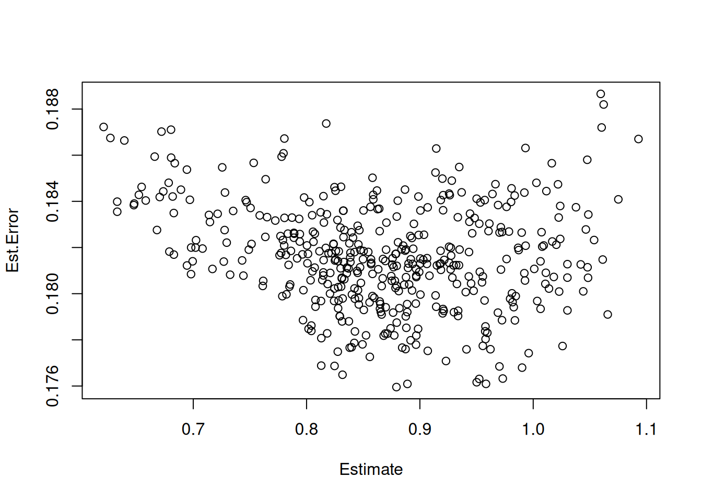
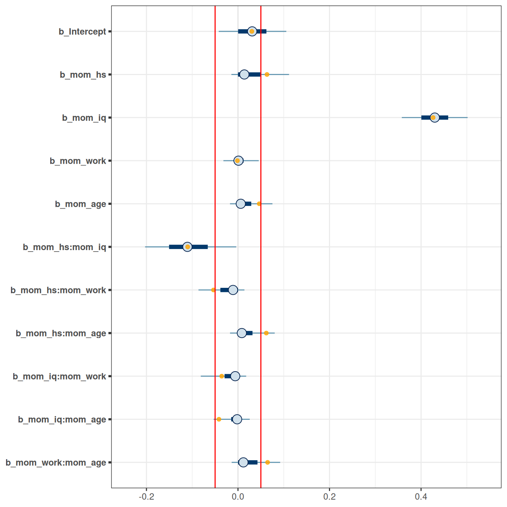
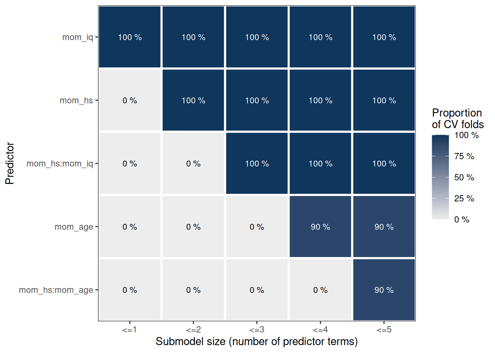

kidiq <- haven::read_dta("http://www.stat.columbia.edu/~gelman/arm/examples/child.iq/kidiq.dta")
head(kidiq)12 Stacking, Regularization, and Variable Selection
12.1 Stacking/Model Averaging
Sometimes it may not be a good practice to only choose one model with low WAIC or LOO-IC, especially when several models have very imilar WAIC/LOO-IC, but they make somewhat different predictions. Instead, we can perform stacking or model averaging by weighting the predictions from multiple models, using weights that are based on their information criteria performance. Stacking approaches this by optimizing the leave-one-out mean squared error in the resulting prediction, whereas model averaging preserves the uncertainty and was not optimized for that task. The technical details can be found in Yao et al. (2018).
Note that the conventional Bayesian model averaging used the posterior model probability (Hoeting et al., 1999), which are approximated by the BIC. The discussion in this note is based on more recent discussion in, e.g., Yao et al. (2018).
We’ll use a data set kidiq that is used in the textbook by Gelman et al. (2021), which can be downloaded and imported with the direct link:
Let’s run four models on some training data by randomly splitting the data into half. First rescale some of the variables:
I will run four models, which is from the last note
\[ \texttt{kidscore}_i \sim N(\mu_i, \sigma) \]
\[ \begin{aligned} \mu_i & = \beta_0 + \beta_1 (\texttt{mom\_iq}_i) \\ \mu_i & = \beta_0 + \beta_1 (\texttt{mom\_iq}_i) + \beta_2 (\texttt{mom\_hs}_i) \\ \mu_i & = \beta_0 + \beta_1 (\texttt{mom\_iq}_i) + \beta_2 (\texttt{mom\_hs}_i) + \beta_3 (\texttt{mom\_iq}_i \times \texttt{mom\_hs}_i) \\ \mu_i & = \beta_0 + \beta_1 (\texttt{mom\_iq}_i) + \beta_2 (\texttt{mom\_hs}_i) + \beta_3 (\texttt{mom\_iq}_i \times \texttt{mom\_hs}_i) + \beta_4 (\texttt{mom\_age}_i) \end{aligned} \]
m1 <- brm(kid_score ~ mom_iq_c,
data = kidiq100,
prior = c(
prior(normal(0, 1), class = "Intercept"),
prior(normal(0, 1), class = "b"),
prior(student_t(4, 0, 1), class = "sigma")
),
seed = 2302,
file = "07b_m1"
)
m1 <- add_criterion(m1, c("loo", "waic"))
# Use `update` will sometimes avoid recompiling
m2 <- update(m1, kid_score ~ mom_iq_c + mom_hs,
newdata = kidiq100,
file = "07b_m2"
)
m2 <- add_criterion(m2, c("loo", "waic"))
m3 <- update(m2, kid_score ~ mom_iq_c * mom_hs,
prior = c(prior(normal(0, 0.5),
class = "b",
coef = "mom_iq_c:mom_hsyes"
)),
file = "07b_m3"
)The desired updates require recompiling the modelm3 <- add_criterion(m3, c("loo", "waic"))
m4 <- update(m3, kid_score ~ mom_iq_c * mom_hs + mom_age_c,
newdata = kidiq100,
file = "07b_m4"
)The desired updates require recompiling the modelm4 <- add_criterion(m4, c("loo", "waic"))12.1.1 Model Weights
We can see that m3 and m4 gave the best LOO-IC and WAIC:
loo_compare(m1, m2, m3, m4) elpd_diff se_diff
m3 0.0 0.0
m4 -0.5 1.1
m2 -3.4 2.5
m1 -5.9 3.9 So it makes sense that if we’re to assign weights, m4 should get most weights. Let’s check the following:
# Weights based on WAIC
waic_wts <- model_weights(m1, m2, m3, m4, weights = "waic")
# Weights based on Stacking (based on the posterior predictive distribution)
stack_wts <- loo_model_weights(m1, m2, m3, m4)
# Print out the weights
round(cbind(waic_wts, stack_wts), 3) waic_wts stack_wts
m1 0.002 0.108
m2 0.020 0.000
m3 0.601 0.750
m4 0.377 0.141You can see m3 would get the highest weight, but it’s only 0.6012479 and thus less than half of the weights when all four models are considered together.
In Bayesian, we want to preserve all the uncertainty in our analyses. Therefore, if we’re not certain which models to use and have tried multiple ones, it would make sense to use all of them to get the best information. So unlike what is commonly done in practice where a researcher would test multiple models and present the best model as if they intended only to test this model, Bayesian analysts should do the honest thing and use all models. The reward is usually better prediction!
12.1.2 Stacking
Stacking is one way to combine the predictions of different models. The technical details can be found in Yao et al. (2018), but you can obtain the predictions using the pp_average function:
# Prediction from stacking by Yao et al. (2018)
pred_stacking <- pp_average(m1, m2, m3, m4)
# Compare the weights
plot(pred_stacking)
12.1.3 Prediction example
Consider a kid whose mother’s IQ is 120 (mom_iq = .2), mother’s age is 40, (mom_age_c = 2.2), mother does not have a high school degree, and mother did not work in first three years of child’s life (mom_work = 1). Then the prediction based on the various models are:
newkid <- data.frame(mom_iq_c = .2,
mom_age_c = 2.2,
mom_work = 1,
mom_hs = "no")
# Visualize the prediction by different models
data.frame(stacking = pp_average(m1, m2, m3, m4, newdata = newkid,
summary = FALSE),
m4 = posterior_predict(m4, newdata = newkid),
m3 = posterior_predict(m3, newdata = newkid),
m2 = posterior_predict(m2, newdata = newkid),
m1 = posterior_predict(m1, newdata = newkid)) |>
mcmc_intervals()
Check out this blog post https://mc-stan.org/loo/articles/loo2-weights.html for more information on stacking and Averaging.
12.2 Shrinkage Priors
When the number of parameters to be estimated is large relative to the amount of data available, ordinary least square (in frequentist) and estimation using non-informative or weakly informative priors tend to overfit. For example, fitting a 6th degree polynomial (with 8 parameters) on a data set with only 10 observations will severely overfit the data, making the results not generalizable. One way to avoid overfitting is to perform regularization, that is, to shrink some of the parameters to closer to zero. This makes the model fit less well to the existing data, but will be much more generalizable to an independent data set.
12.2.1 Number of parameters
In Bayesian analyses, the concept of number of parameters is a little vague. This is because the posterior distribution is a function of both the prior and the data. For non-informative priors, it would make sense to simply count the number of parameters. However, say one put a very strong prior on one of the regression coefficients, which has about 9 times the weights of the information contributed by the data:
Code
ggplot(data.frame(th = c(-3, 3)), aes(x = th)) +
stat_function(
fun = dnorm, args = list(mean = 0, sd = 1 / 9),
aes(col = "prior"), n = 501
) +
stat_function(
fun = dnorm, args = list(mean = 0.3, sd = 1),
aes(col = "likelihood"), n = 501
) +
labs(y = "Density", x = expression(theta), col = "")Then the posterior for the parameter only uses 1/10 of the information from the data! Therefore, it would make more sense to count this as 0.1 parameter, instead of 1 full parameter.
The concept of regularization is essentially to introduce a stronger prior so that the posterior is less likely to overfit the data, and the resulting model will have lower effective number of parameters, which, when done appropriately, would find a model that is more likely to generalize to external data sets.
In Bayesian methods, regularization can be done by choosing a prior on the coefficient that has a sharp peak at 0, but also has a heavy tail. One such prior is what is called the horseshoe prior. The discussion here is based on the blog pot by Michael Betancourt: https://betanalpha.github.io/assets/case_studies/bayes_sparse_regression.html
It should first be pointed out that these priors were based on the assumption that the predictors and the outcome has been scaled to have a standard deviation of one. So we will do this here:
# For variable selection, scale the predictor and outcome to have unit variance
kidiq_std <- scale(kidiq)
head(kidiq_std) kid_score mom_hs mom_iq mom_work mom_age
[1,] -1.06793237 0.521631 1.4078352 0.93422435 1.5602285
[2,] 0.54886757 0.521631 -0.7092079 0.93422435 0.8197811
[3,] -0.08805362 0.521631 1.0295443 0.93422435 1.5602285
[4,] -0.18604150 0.521631 -0.0366907 0.08776638 0.8197811
[5,] 1.38176451 0.521631 -0.4836193 0.93422435 1.5602285
[6,] 0.54886757 -1.912647 0.5267892 -1.60514956 -1.771784912.2.2 Sparsity-Inducing Priors
The horseshoe prior (Carvalho et al., 2010) is a type of hierarchical prior for regression models by introducing a global scale, \(\tau\), and local scale,\(\lambda_m\), parameters on the priors for the regression coefficients (Piironen & Vehtari, 2017). Specifically, with \(p\) predictors,
\[ \begin{aligned} Y_i & \sim N(\mu_i, \sigma^2) \\ \mu_i & = \beta_0 + \sum_{m = 1}^p \beta_m X_m \\ \beta_0 & \sim N(0, 1) \\ \beta_m & \sim N(0, \tau \lambda_m) \\ \lambda_m & \sim \textrm{Cauchy}^+(0, 1) \\ \tau & \sim \textrm{Cauchy}^+(0, \tau_0) \end{aligned} \]
The local scale, \(\lambda_m\), can flexibly shrink the coefficient to close to zero. Below is the implication of the prior on the shrinkage of \(\beta\):
ggplot(data.frame(shrinkage = c(0, 1)), aes(x = shrinkage)) +
stat_function(fun = function(x) {
dcauchy(sqrt(1 / x - 1)) * 2 * (1 / x - 1)^(-1 / 2) * x^(-2) / 2
}, n = 501) +
theme(
axis.text.y = element_blank(),
axis.ticks.y = element_blank()
) +
labs(y = "")Warning: Removed 1 row containing missing values (`geom_function()`).The U-shape here means that, for coefficients that are weakly supported by the data, the horseshoe will shrink it to very close to zero, whereas for coefficients that are more strongly supported by the data, the horseshoe will not shrink it much.
The red curve in the following is one example for the resulting prior distribution on \(\beta\):
dhs <- Vectorize(
function(y, df = 1) {
ff <- function(lam) dnorm(y, 0, sd = lam) * dt(lam, df) * 2
if (y != 0) {
integrate(ff, lower = 0, upper = Inf)$value
} else {
Inf
}
}
)
ggplot(data.frame(x = c(-6, 6)), aes(x = x)) +
stat_function(
fun = dhs, args = list(df = 3), n = 501,
aes(col = "HS"), linetype = 1
) +
stat_function(
fun = dnorm, n = 501,
aes(col = "norm"), linetype = 2
) +
scale_color_manual("",
values = c("red", "black"),
labels = c("horseshoe(3)", "N(0, 1)")
) +
xlab("y") +
ylab("density") +
ylim(0, 0.75)Such a prior has more density at 0, but also more density for extreme values, as compared to a normal distribution. Thus, for coefficients with very weak evidence, the regularizing prior will shrink it to zero, whereas for coefficients with strong evidence, the shrinkage will be very small. This is called a horseshoe prior. In brms, one can specify it with horseshoe(), which is a stabilized version of the original horseshoe prior (Carvalho et al., 2010).
12.2.3 Regularized Horseshoe/Hierarchical Shrinkage
The regularized horseshoe (https://projecteuclid.org/euclid.ejs/1513306866) prior is
\[ \begin{aligned} \beta_m & \sim N(0, \tau \tilde \lambda_m) \\ \tilde \lambda_m & = \frac{c \lambda_m}{\sqrt{c^2 + \tau^2 \lambda^2_m}} \\ \lambda_m & \sim \textrm{Cauchy}^+(0, 1) \\ c^2 & \sim \textrm{Inv-Gamma}(\nu / 2, nu / 2 s^2) \\ \tau & \sim \textrm{Cauchy}^+(0, \tau_0) \end{aligned} \]
The additional parameters are chosen in the code below. First, fit a model without shrinkage:
# A model with all main and interaction effects
m5 <- brm(kid_score ~ (.)^2,
data = kidiq_std,
prior = c(
prior(normal(0, 1), class = "Intercept"),
prior(normal(0, 1), class = "b"),
prior(student_t(4, 0, 1), class = "sigma")
),
seed = 2217,
file = "07b_m5"
)# A model with all main and interaction effects, and regularization
m_hs <- brm(kid_score ~ (.)^2,
data = kidiq_std,
prior = c(
prior(normal(0, 1), class = "Intercept"),
# Prior guess of 20% of the terms are non-zero
prior(horseshoe(par_ratio = 2 / 8), class = "b"),
prior(student_t(4, 0, 1), class = "sigma")
),
# Need higher adapt_delta
control = list(adapt_delta = .995, max_treedepth = 12),
seed = 2217,
file = "07b_m_hs"
)We can plot the coefficients:
mcmc_plot(m_hs, variable = "^b_",
regex = TRUE) +
# Show the shrinkage as orange, transparent dots
geom_point(
data = posterior_summary(m5) |>
as_tibble(rownames = "parameter") |>
filter(parameter != "lp__"),
aes(x = Estimate, y = parameter), alpha = 0.8,
col = "orange"
) +
geom_vline(xintercept = c(-.05, .05), col = "red")Warning: Removed 2 rows containing missing values (`geom_point()`).
An arbitrary cutoff is to select only coefficients with posterior means larger than .05, in which case only mom_iq and mom_hs and their interaction were supported by the data.
You can also double check that the regularized version has better LOO-IC:
loo(m5, m_hs)Output of model 'm5':
Computed from 4000 by 434 log-likelihood matrix
Estimate SE
elpd_loo -567.3 14.4
p_loo 12.8 1.4
looic 1134.6 28.8
------
Monte Carlo SE of elpd_loo is 0.1.
Pareto k diagnostic values:
Count Pct. Min. n_eff
(-Inf, 0.5] (good) 433 99.8% 2098
(0.5, 0.7] (ok) 1 0.2% 527
(0.7, 1] (bad) 0 0.0% <NA>
(1, Inf) (very bad) 0 0.0% <NA>
All Pareto k estimates are ok (k < 0.7).
See help('pareto-k-diagnostic') for details.
Output of model 'm_hs':
Computed from 4000 by 434 log-likelihood matrix
Estimate SE
elpd_loo -565.2 14.4
p_loo 8.5 0.9
looic 1130.5 28.9
------
Monte Carlo SE of elpd_loo is 0.1.
All Pareto k estimates are good (k < 0.5).
See help('pareto-k-diagnostic') for details.
Model comparisons:
elpd_diff se_diff
m_hs 0.0 0.0
m5 -2.1 2.3 And also that the effective number of parameters was smaller in m_hs.
12.3 Variable Selection
One way to identify variables that are relevant to predict a certain outcome is to use the projection-based method, as discussed in https://mc-stan.org/projpred/articles/projpred.html and in Piironen et al. (2020).
Building from the full model with shrinkage priors, we first do a trial run to identify the importance of various variables in terms of their importance for prediction:
# Get reference model
refm_obj <- get_refmodel(m_hs)
# Preliminary run to find `nterms_max`
cvvs_fast <- cv_varsel(
refm_obj,
validate_search = FALSE
)-----
Running the search ...
10% of terms selected
20% of terms selected
30% of terms selected
40% of terms selected
50% of terms selected
60% of terms selected
70% of terms selected
80% of terms selected
90% of terms selected
100% of terms selected
-----
-----
Running the performance evaluation with `refit_prj = TRUE` ...
-----# mlpd = mean log predictive density
plot(cvvs_fast, stats = "mlpd", ranking_nterms_max = NA)From the plot, we find when the predictive performance starts to level off when we keep adding more terms to the model. In this case, it seems to be 4. Given that this is a trial run, we’ll set nterms_max to 5, which is slightly higher.
We then set validate_search = FALSE for a final run. For computational feasibility, we’ll use 10-fold validation.
# With 10-fold cross-validation
cvvs <- cv_varsel(
refm_obj,
validate_search = TRUE,
cv_method = "kfold",
K = 10,
nterms_max = 5
)-----
Running the search using the full dataset ...
20% of terms selected
40% of terms selected
60% of terms selected
80% of terms selected
100% of terms selected
-----
-----
Refitting the reference model K = 10 times (using the fold-wise training data) ...
-----
-----
Running the search and the performance evaluation with `refit_prj = TRUE` for each of the K = 10 CV folds separately ...
|
| | 0%
|
|======= | 10%
|
|============== | 20%
|
|===================== | 30%
|
|============================ | 40%
|
|=================================== | 50%
|
|========================================== | 60%
|
|================================================= | 70%
|
|======================================================== | 80%
|
|=============================================================== | 90%
|
|======================================================================| 100%
-----plot(cvvs, stats = "mlpd", deltas = TRUE)# model size suggested by the program
suggest_size(cvvs, stat = "mlpd")[1] 3# Same with RMSE
suggest_size(cvvs, stat = "rmse")[1] 2# Summary of the variable selection results
summary(cvvs,
stats = "mlpd", type = c("mean", "lower", "upper"),
deltas = TRUE
)
Family: gaussian
Link function: identity
Formula: kid_score ~ mom_hs + mom_iq + mom_work + mom_age + mom_hs:mom_iq +
mom_hs:mom_work + mom_hs:mom_age + mom_iq:mom_work + mom_iq:mom_age +
mom_work:mom_age
Observations: 434
Projection method: traditional
CV method: K-fold CV with K = 10 and search included (i.e., fold-wise searches)
Search method: forward
Maximum submodel size for the search: 5
Number of projected draws in the search: 20 (from clustered projection)
Number of projected draws in the performance evaluation: 400
Argument `refit_prj`: TRUE
Submodel performance evaluation summary with `deltas = TRUE` and `cumulate = FALSE`:
size ranking_fulldata cv_proportions_diag mlpd mlpd.lower mlpd.upper
0 (Intercept) NA -0.11890 -0.1403 -0.09748
1 mom_iq 1 -0.01025 -0.0175 -0.00299
2 mom_hs 1 -0.00616 -0.0120 -0.00037
3 mom_hs:mom_iq 1 0.00070 -0.0021 0.00354
4 mom_age 1 0.00046 -0.0023 0.00321
5 mom_hs:mom_age 1 0.00131 -0.0011 0.00375
Reference model performance evaluation summary with `deltas = TRUE`:
mlpd mlpd.lower mlpd.upper
0 0 0 # Predictor ranking(s)
rk <- ranking(cvvs)
plot(cv_proportions(rk, cumulate = TRUE))
Here it suggests to either include only mom_iq and mom_hs, or to also include their interactions.
12.3.1 Projection-Based Method
The projection-based method will obtain the posterior distributions based on a projection from the full model on the simplified model. In other words, we’re asking the question:
If we want a model with only
mom_iqandmom_hs, what coefficients should be obtained so that the resulting prediction accuracy is as closed to the full model as possible?
Note that the coefficients will be different from if you were to directly estimate the model using the two predictors (i.e., m2). In this case, simulation results showed that the projection-based method will yield a model with better predictive performance.
# Fit m2 with the standardized data
m2_std <- brm(kid_score ~ mom_hs + mom_iq,
data = kidiq_std,
prior = c(
prior(normal(0, 1), class = "Intercept"),
prior(normal(0, 1), class = "b"),
prior(student_t(4, 0, 1), class = "sigma")
),
seed = 2302,
file = "07b_m2_std"
)# Visualise the projected three most relevant variables
prj <- project(refm_obj,
predictor_terms = c("mom_iq", "mom_hs"),
verbose = FALSE
)
mcmc_intervals(as.matrix(prj)) +
# Show the non-projection version as black, transparent dots
geom_point(
data =
posterior_summary(m2_std) |>
as_tibble(rownames = "parameter"),
aes(x = Estimate, y = parameter), alpha = 0.8,
col = "orange"
)Warning: Removed 2 rows containing missing values (`geom_point()`).